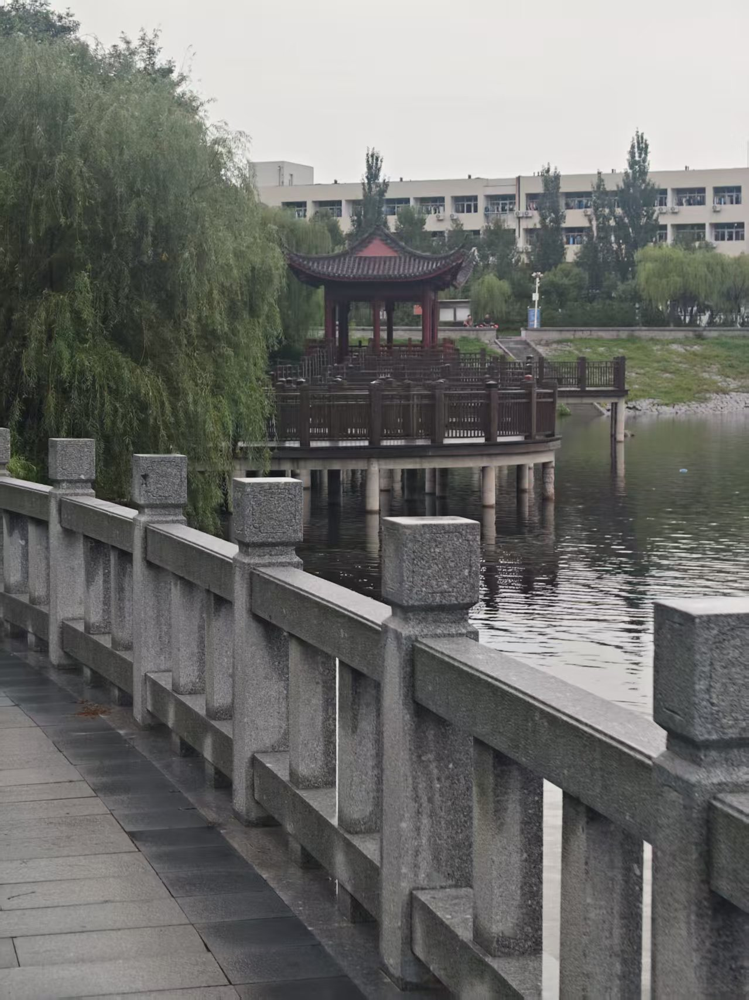

当春风拂过校园的每一寸土地，沉睡了一整个冬天的生机便在枝头悄然苏醒。主干道两侧的玉兰树率先绽放，洁白的花瓣像被春风揉碎的月光，缀满了枝头，在阳光下泛着温润的光泽，风一吹，便有花瓣悠悠落下，铺成一条浪漫的花径。沿着花径往前走，便是校园里最动人的湖心湖，湖面像一块被春风熨平的绿绸，倒映着岸边抽芽的垂柳，柳条垂在水面，轻轻拂过，便漾开一圈圈细碎的涟漪，惊起几只在湖面嬉戏的野鸭，扑棱着翅膀飞向远处的芦苇丛。湖边的草坪早已褪去了冬日的枯黄，冒出了嫩生生的新绿，像给大地铺上了一层柔软的绒毯，课间时分，总有同学三三两两坐在草坪上，或读书，或闲谈，或只是静静晒着太阳，任春风裹着花香扑满脸庞。
校园的后山更是春日的宝藏之地。沿着石阶往上走，两侧的樱花树连成一片粉色的云海，风一吹，花瓣便像雪一样簌簌落下，落在肩头，落在发间，仿佛走进了一场浪漫的春日梦境。山顶的观景台是俯瞰校园全景的最佳位置，站在这里，整个校园的春色尽收眼底：教学楼的红瓦在绿树的掩映下格外鲜亮，操场的跑道像一条红色的丝带缠绕在绿意之间，远处的图书馆在春光里静静伫立，像一位沉默的智者，守护着校园里的每一份青春与梦想。春日的校园，每一缕风都带着花香，每一寸阳光都裹着温暖，每一个角落都藏着生机与希望，这是独属于我们的、最动人的春日浪漫。
